Was ist das
Der Ingenieur ist ein Programm auf deinem PC. Er liest die Daten aus dem Spiel und spricht über dein Headset mit dir: er warnt vor schnelleren Autos, sagt dir, wann du an die Box musst, was beim Stopp gewechselt wird und wo du Zeit verlierst. Fragen beantwortet er per Stimme – Taste am Lenkrad halten, sprechen, loslassen.
Die Boxenmauer ist eine Webseite (PC oder Handy). Das ganze Team sieht live den Zustand des Autos, die Gegner, das Wetter und den Stintplan und kann dem Fahrer Nachrichten schicken, die der Ingenieur vorliest.
Funktioniert auf jeder Strecke, mit jedem Auto und jeder Klasse in Le Mans Ultimate. Du kannst allein (Modus Solo) oder im Team fahren.
Was du brauchst
- Windows 10 oder 11 und Le Mans Ultimate.
- Ein Headset mit Mikrofon und eine freie Taste am Lenkrad (oder eine Taste auf der Tastatur).
- Internet (Stimme, Spracherkennung und Boxenmauer funktionieren online).
- Einen kostenlosen Groq-Schlüssel – ohne ihn funktioniert die KI nicht (bessere Spracherkennung, KI-Antworten, Übersetzung seltener Meldungen); wie du ihn bekommst: KI.
Installation (5 Minuten)
- Lade das Paket
PitWallCrew_….zipaus dem FR-Mods-Beitrag auf Patreon herunter. Vor dem Entpacken: Rechtsklick auf die Datei → Eigenschaften → Zulassen anhaken → OK (sonst kann Windows die Dateien blockieren). - Entpacken, z. B. nach
Dokumente– es entsteht der OrdnerPit Wall Crewmit INSTALL.bat und dem OrdnerProgram(Programmdateien, musst du nicht öffnen). - Doppelklick auf INSTALL.bat. Das Installationsprogramm lädt das Nötige selbst herunter (ein paar Minuten, ohne Fragen) und legt ein Desktop-Symbol Pit Wall Crew an. Am Ende startet es die App – das Installationsfenster kannst du schließen.
- Wähle in der App die Sprache. Daneben öffnet sich das Fenster Erste Schritte – geh es der Reihe nach durch (bei jedem Punkt gibt es Öffnen):
- Team: oben Neues Team erstellen… (erste Person) oder Teamcode und Passwort von deinen Teamkollegen; dann dein Name – ein neuer Name wird beim Speichern zu den Fahrern des Teams hinzugefügt; allein – Modus Solo.
- Mikrofon und Taste: Mikrofon wählen (der Balken bewegt sich beim Sprechen), Festlegen: Taste drücken… klicken und die Taste am Lenkrad drücken.
- Stimme: Stimme des Ingenieurs wählen und ▶ Anhören klicken.
- Groq-Schlüssel (kostenlos, für die KI): so bekommst du ihn → Erweitert → Eigener Groq-Schlüssel → Schlüssel prüfen.
- Patreon: auf der Seite Renningenieur Mit Patreon anmelden – so bekommst du Updates.
- Speichern und Ingenieur-Modul neu starten klicken.
- In LMU einmalig: Settings → Gameplay → Enable Plugins = ON (ohne das sieht das Programm die Spieldaten nicht). Fahr raus, halte die Taste und frag z. B. „wie viel Sprit?“.
Deinstallieren: im Ordner Pit Wall Crew\Program doppelt auf UNINSTALL.bat klicken – entfernt die Desktop-Verknüpfung, schließt das Programm und löscht (nach Bestätigung) den ganzen Ordner mit deinen Einstellungen.
Das App-Fenster
Das Symbol Pit Wall Crew öffnet die App. Der Ingenieur startet von selbst und beginnt zu sprechen, sobald du das Spiel startest und auf die Strecke fährst.
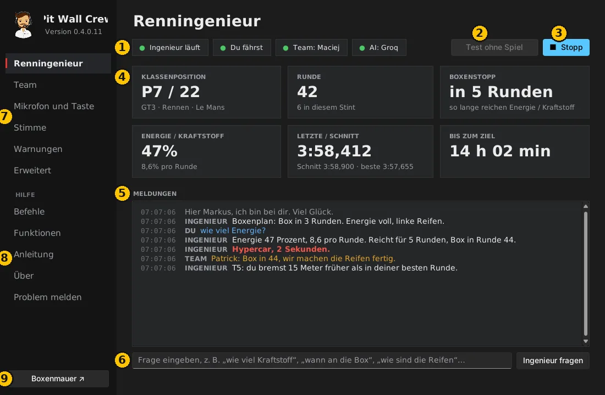
- Status: ob der Ingenieur läuft, das Spiel sieht („Du fährst“ oder Zuschauer, wenn ein Teamkollege fährt), Team- und KI-Verbindung. Grün = OK.
- Boxenmauer öffnen – die Teamseite im Browser.
- Test ohne Spiel – ein simuliertes Rennen. Prüfe Stimme, Mikrofon und Boxenmauer, ohne LMU zu starten.
- Starten / Stopp des Ingenieurs.
- Patreon – melde dich an, um Updates zu bekommen. Danach bleibt nur „Von Patreon abmelden“.
- Wichtigste Zahlen: Position, Runde, Runden bis zum Stopp, Energie oder Kraftstoff, Rundenzeiten, Zeit bis ins Ziel.
- Meldungen – alles, was der Ingenieur gesagt hat, deine Fragen und Nachrichten des Teams. Rot = dringend.
- Fragefeld – tippe eine Frage, statt zu sprechen.
- Einstellungen – Team, Mikrofon, Stimme, Warnungen (siehe unten).
- Hilfe – Befehle, Funktionen, Anleitung (auch Erste Schritte), Änderungen, Über und Problem melden.
- Boxenmauer – wie Knopf 2, von jeder Seite der App.
Einstellungen
Nach jeder Änderung auf Speichern und Ingenieur-Modul neu starten klicken (unten rechts).
Team
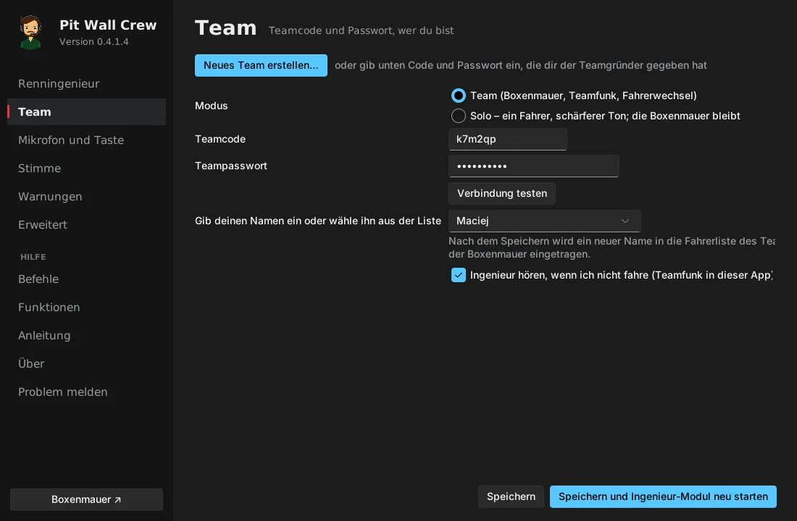
- Solo – du fährst allein: sonst nichts einzutragen. Die Boxenmauer funktioniert trotzdem als deine Live-Ansicht.
- Team – eine Person klickt Neues Team erstellen… (Name und Passwort) und bekommt einen 6-stelligen Teamcode. Die anderen geben Code und Passwort ein, klicken Verbindung testen und wählen, wer sie sind.
- Code und Passwort nur privat weitergeben – wer sie kennt, sieht den Zustand des Autos und kann dem Fahrer schreiben.
- Ingenieur hören, wenn ich nicht fahre – wenn ein Teamkollege fährt, hörst du seinen Ingenieur (Teamfunk).
Mikrofon und Taste
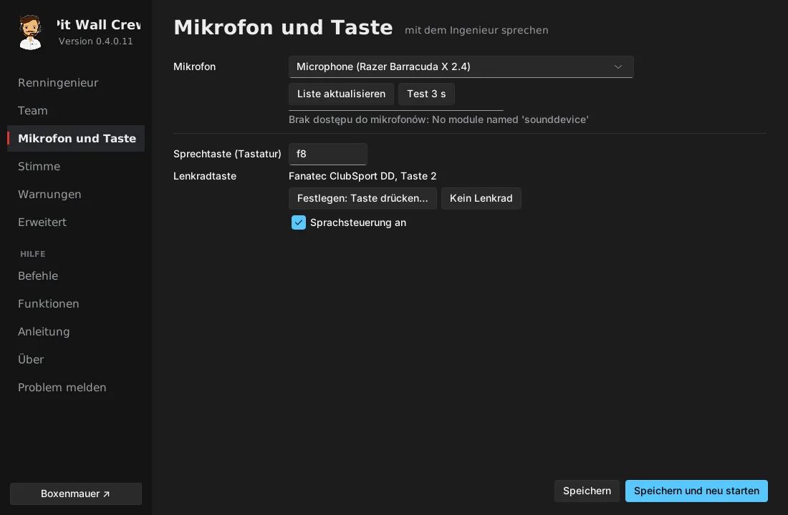
- Mikrofon wählen und Test 3 s klicken – etwas sagen und prüfen, ob sich der Pegel bewegt.
- Festlegen: Taste drücken… und die Taste am Lenkrad drücken, mit der du sprechen willst. Eine Tastaturtaste geht auch.
Stimme
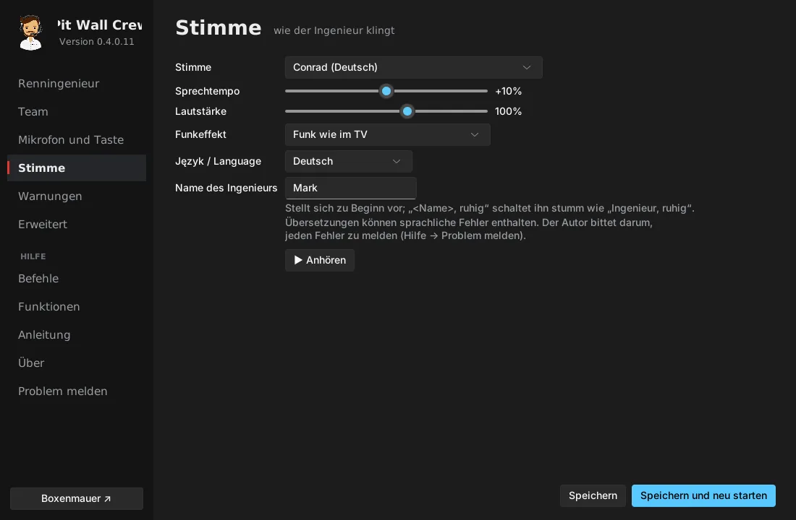
- Stimme, Sprechtempo, Lautstärke, Funkeffekt, Sprache und Name des Ingenieurs. ▶ Anhören spielt ein Beispiel.
- Gibst du ihm einen Namen (z. B. Markus), stellt er sich vor, und „Markus, ruhig“ schaltet ihn stumm.
Warnungen
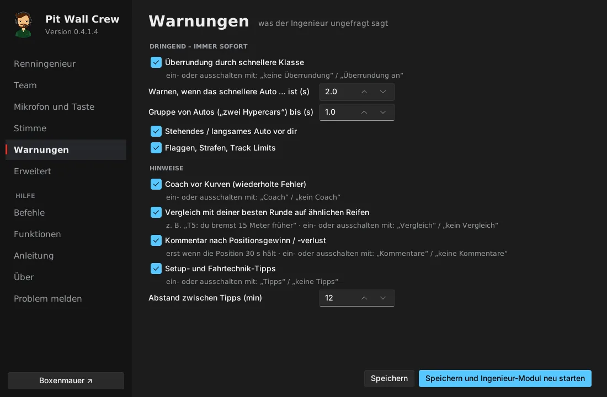
Was der Ingenieur von sich aus sagt: Überrundung durch schnellere Klassen (und ab wie vielen Sekunden), stehende Autos, Flaggen, Coaching vor Kurven, Vergleich mit deiner besten Runde, Kommentare nach Überholmanövern, Setup-Vorschläge. Alles lässt sich während der Fahrt per Stimme ein- und ausschalten (z. B. „kein Coach“).
Erweitert
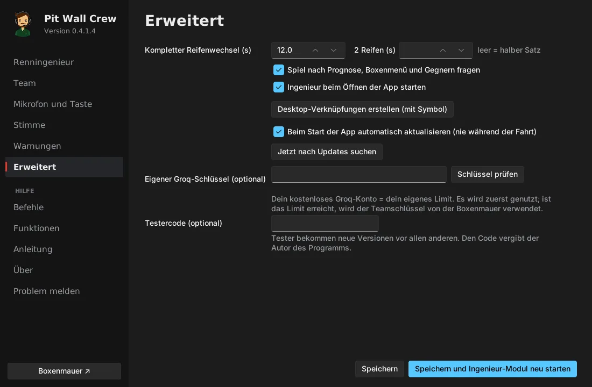
Zeit für den kompletten Reifenwechsel, automatischer Start des Ingenieurs, Desktop-Verknüpfungen, Updates und dein eigener Groq-Schlüssel (optional – eigenes Limit).
Mit dem Ingenieur sprechen
Taste halten, sprechen, loslassen. Ein Tastendruck unterbricht auch, was der Ingenieur gerade sagt.
Beispiele: „wie viel Sprit?“, „wann in die Box?“, „welche Reifen wechseln wir?“, „wer ist vor mir?“, „wo verliere ich?“, „Wetter?“, „wann überrundet mich das erste Hypercar?“, „ruhig“ (völlige Stille bis zum nächsten Druck), „nur Dringendes“, „wiederhol“.
Die vollständige Liste steht in der App: Hilfe → Befehle.
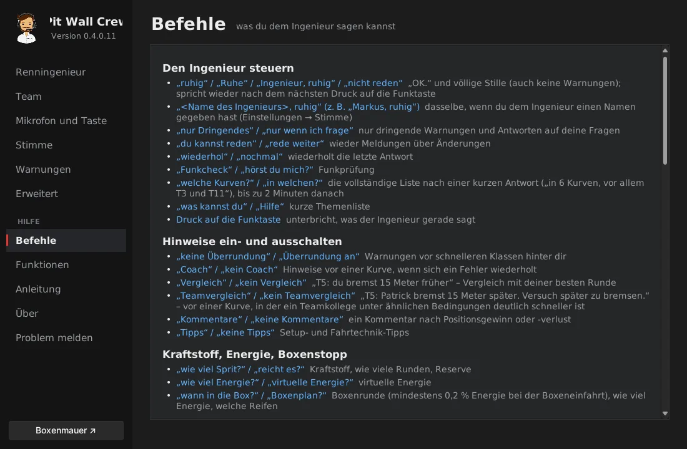
Eine Frage, die das Programm nicht kennt, geht zusammen mit den Renndaten an die KI (mit Groq-Schlüssel).
KI – kostenloser Groq-Schlüssel (einmal, 3 Minuten)
- Öffne console.groq.com und melde dich an – am einfachsten mit einem Google-Konto. Das Konto ist kostenlos.
- Links: API Keys → Create API Key, Namen eingeben (z. B.
PWC) → Submit. - Schlüssel sofort kopieren (beginnt mit
gsk_) – Groq zeigt ihn nur einmal. Der Schlüssel ist kostenlos, mit Tageslimit. - Team (eine Person reicht): Boxenmauer → Team → Team-KI (Groq) → einfügen → Schlüssel speichern. Der Schlüssel gilt für das ganze Team, nur Teammitglieder sehen ihn.
- Solo oder eigenes Limit: App → Erweitert → Eigener Groq-Schlüssel → einfügen → Schlüssel prüfen (es soll „✓ Der Schlüssel funktioniert“ stehen) → Speichern und Ingenieur-Modul neu starten.
- Fertig, wenn auf der Seite Renningenieur ein grünes KI: Groq steht.
Schick den Schlüssel nie in einem Chat – füge ihn selbst ein.
Updates und Patreon
- Neue Versionen bekommen zahlende FR-Mods-Unterstützer auf Patreon.
- In der App auf der Seite Renningenieur auf Mit Patreon anmelden klicken. Im Browser bei Patreon anmelden und Allow klicken, dann zurück zur App. Danach bleibt nur Von Patreon abmelden.
- Updates installieren sich beim Start der App – nie während der Fahrt. Deine Einstellungen bleiben erhalten.
- Tester geben stattdessen einen Code vom Autor ein: Erweitert → Testercode → Speichern und Ingenieur-Modul neu starten.
Ohne Patreon oder Testercode läuft das Programm weiter, nur ohne neue Versionen.
Boxenmauer
Öffne sie mit der Taste Boxenmauer in der App oder unter zepansrpl-creator.github.io/Pit-Wall-Crew (Anmeldung mit Teamcode und Passwort; dein Handy merkt sie sich). Die Sprachauswahl ist oben, die Taste ☀ / ☾ wechselt zwischen hellem und dunklem Aussehen.
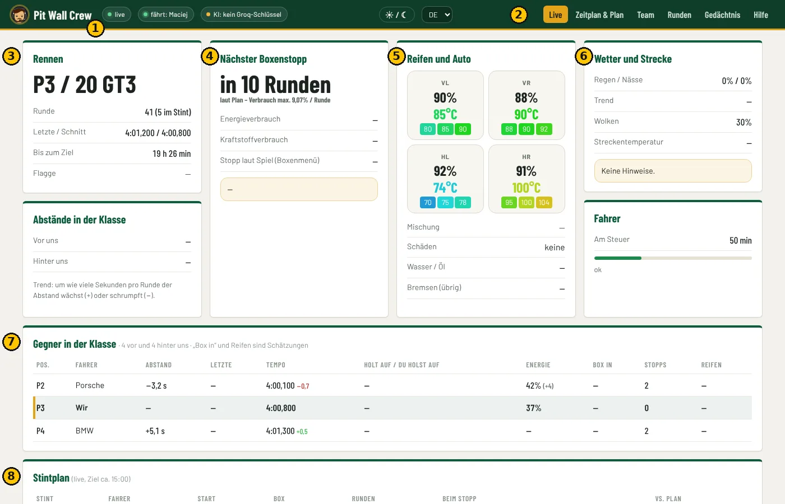
- Status: ob die Daten live sind, wer fährt, ob die KI funktioniert.
- Tabs: Live, Zeitplan & Plan, Team, Runden, Gedächtnis, Hilfe.
- Rennen: Position in der Klasse, Runde, Rundenzeiten, Zeit bis ins Ziel, Flagge.
- Nächster Boxenstopp: in wie vielen Runden, Energie- und Kraftstoffverbrauch, was beim Stopp passiert.
- Reifen und Auto: Verschleiß und Temperaturen jedes Reifens, Schäden, Motor, Bremsen.
- Wetter und Strecke: Regen, Nässe, Wolken, Streckentemperatur und Hinweise des Ingenieurs.
- Gegner in der Klasse: Abstände, Tempo, wer wen einholt, Energie, voraussichtlicher Stopp.
- Stintplan: wer fährt, wann gewechselt wird, was beim Stopp passiert, um wie viele Minuten sich der Zeitplan gegenüber dem Plan verschoben hat. Ohne Plan für heute wird er automatisch für den aktuellen Fahrer erstellt – aus der Renndauer und den im Spiel verfügbaren Reifen.
Weiter unten sind die Streckenkarte mit allen Autos und der Teamfunk: „An den Fahrer“ (der Ingenieur liest die Nachricht vor), „Ingenieur fragen“ (Antwort per Stimme), „Fragen (nur Text)“, „Ins Gedächtnis“.
Auf dem Handy
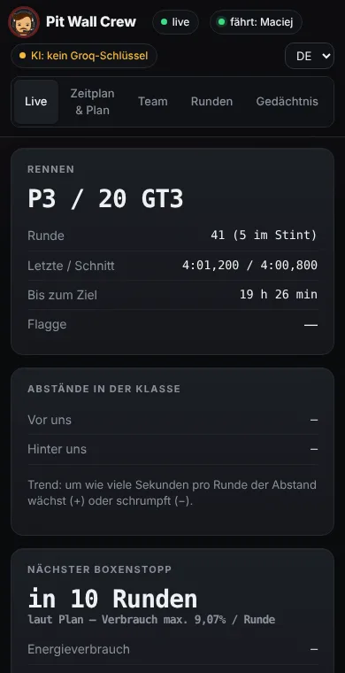
Tab Team
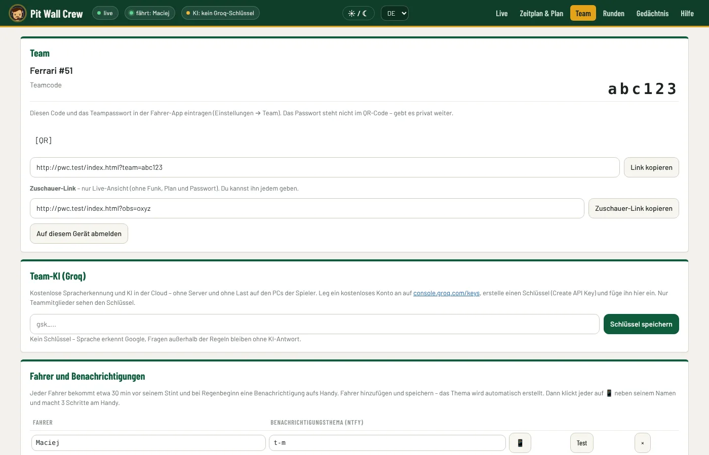
Teamcode und QR-Code für die Boxenmauer, Fahrer mit Benachrichtigungsthemen, der Groq-Schlüssel und ein Zuschauer-Link – nur Live-Ansicht, ohne Funk und Plan; den kannst du jedem geben.
Zeitplan & Plan (vor einem langen Rennen, eine Person)
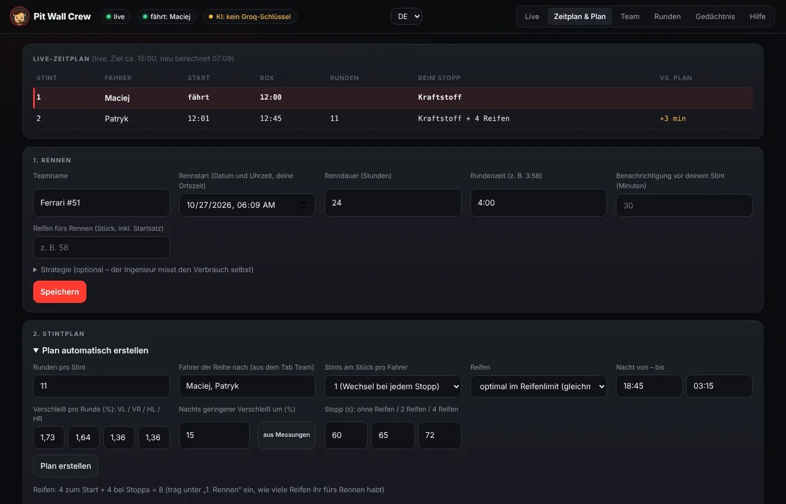
- 1. Rennen: Startdatum und -uhrzeit, Dauer, Rundenzeit, Reifen fürs Rennen → Speichern.
- 2. Stintplan → Plan automatisch erstellen: Runden pro Stint, Fahrerreihenfolge, Reifenverschleiß (aus Messungen trägt den in euren Sessions gemessenen Verschleiß ein), Stoppzeiten → Plan erstellen. Das Programm verteilt die Reifen so, dass sie möglichst gleichmäßig verschleißen.
- Tabelle bei Bedarf anpassen: Fahrer aus der Liste, Runden, Links / Rechts = Reifen auf dieser Seite wechseln → Plan speichern. Der Zähler zeigt, ob ihr im Reifenkontingent bleibt.
Während des Rennens rechnet sich der Zeitplan nach dem echten Tempo neu. Der Ingenieur holt dich an die Box und wechselt Reifen nach Plan (außer ein Reifen hält nicht oder die Energie reicht nicht). Der Plan gilt für ein Rennen mit der unter „1. Rennen“ eingetragenen Dauer.
Handy-Benachrichtigungen (jeder Fahrer, 2 Minuten)
- Installiere die kostenlose App ntfy (Google Play / App Store).
- Auf der Boxenmauer: Team → 📱 neben deinem Namen klicken – dein Thema und QR-Code erscheinen.
- In ntfy auf + tippen, Thema eingeben und Subscribe (oder QR-Code scannen).
- Auf Test neben deinem Namen klicken – „Pit Wall Crew – test“ kommt aufs Handy.
Die Benachrichtigung kommt etwa 30 Minuten vor deinem Stint, eine zweite, wenn sich der Stint um 10 Minuten oder mehr verschiebt, und wenn es zu regnen beginnt.
Langes Rennen (z. B. 24 h)
- Der Fahrer im Auto lässt Pit Wall Crew den ganzen Stint laufen – seine App schickt die Daten an die Boxenmauer und die Benachrichtigungen.
- Die anderen können Spiel, App und PC ausschalten. Nach der Handy-Benachrichtigung PC, LMU und Pit Wall Crew starten, bevor du einsteigst.
- Plan, Zeitplan, Nachrichten, Teamgedächtnis und die Übergabe liegen in der Teamdatenbank – das Programm holt sie selbst.
Probe vor dem Rennen (15 Minuten)
- Alle starten Pit Wall Crew – grünes Team und KI: Groq.
- Ein Fahrer klickt Test ohne Spiel. Die anderen öffnen die Boxenmauer – die Daten sollten „live“ sein.
- Der Fahrer fragt per Stimme „wie viel Sprit?“ – alle hören die Antwort.
- „An den Fahrer“ von der Boxenmauer senden – der Ingenieur liest die Nachricht vor.
Wenn etwas nicht funktioniert
| Symptom | Was tun |
|---|---|
| „Warte auf LMU“, obwohl das Spiel läuft | LMU: Settings → Gameplay → Enable Plugins = ON, dann das Spiel neu starten. |
| Der Ingenieur hört mich nicht | Mikrofon und Taste → Test 3 s. Stummschaltung am Headset und Windows → Datenschutz → Mikrofon prüfen. |
| „Falscher Teamcode oder Passwort“ | Team → korrigieren → Verbindung testen → Speichern. |
| Boxenmauer: „keine Daten aus dem Spiel“ | Beim Fahrer muss die App mit grünem „Team“ laufen. |
| „KI: Groq – falscher Schlüssel“ | Schlüssel erneut einfügen (Boxenmauer → Team → Team-KI). |
| Jede Meldung ist doppelt zu hören | Das Programm läuft zweimal: App schließen, „pythonw“ im Task-Manager beenden, einmal starten. |
| Keine Benachrichtigungen | Rennstart und Fahrer im Plan, Thema in ntfy, Test-Taste; die App läuft auf jemandes PC. |
| Das Spiel ruckelt | Meist zu wenig Grafikspeicher: Texturen, sichtbare Autos und Schatten reduzieren, andere Programme schließen. |
| Windows blockiert Dateien | Vor dem Entpacken: Rechtsklick aufs Paket → Eigenschaften → Zulassen. |
Problem oder Vorschlag melden
In der App: Hilfe → Problem melden, auf der Boxenmauer: Tab Hilfe. Das geht direkt an den Autor. Mit deiner Zustimmung kann die App bei einem Absturz automatisch einen Bericht senden (ohne Sprachaufnahmen, Schlüssel und Passwörter) – das schaltest du auf derselben Seite ein oder aus. Details: Datenschutz.
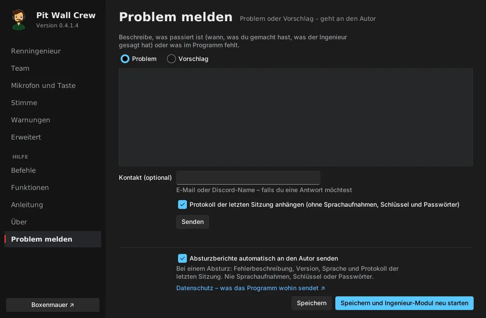